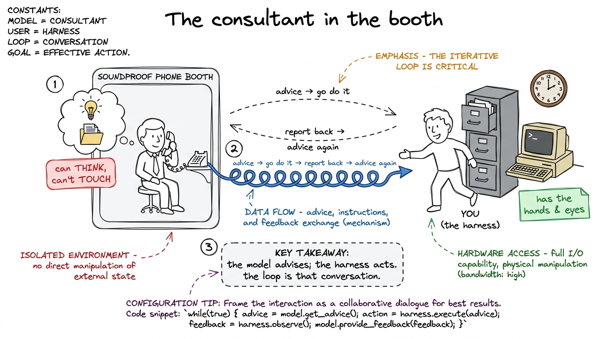
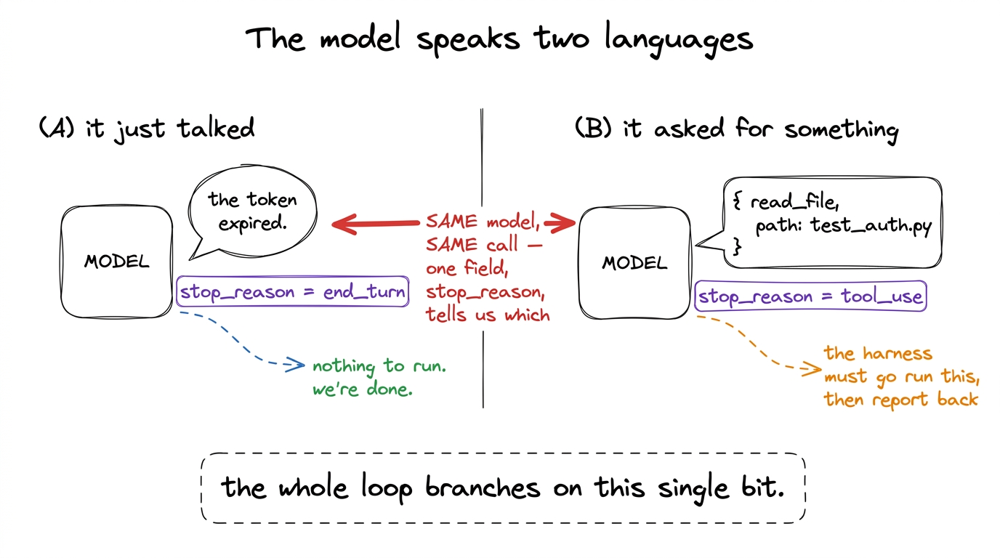
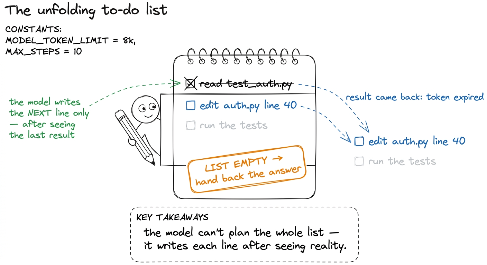
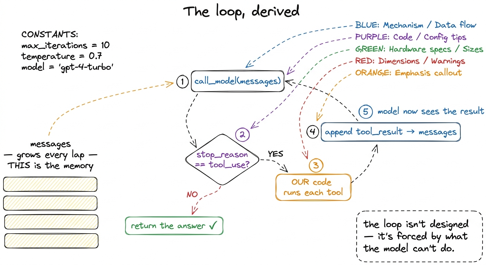
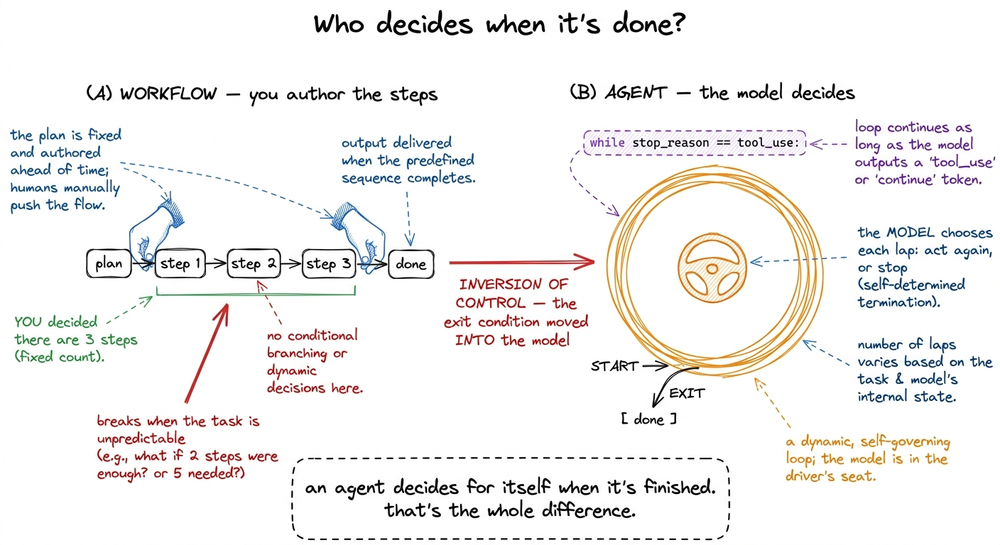

Teaching the agent loop
By the end of this chapter you can stand at a whiteboard and teach the whole of agency as a single while-loop — so clearly that a student who has only ever chatted with a model suddenly sees how the same model can read their repo, edit files, run the tests, and stop on its own. This is Layer 1. Everything else in the five days bolts onto this. So you must own it cold. We build it the way you'll build it for the room: one honest step at a time, with a to-do list on the board, until the loop feels not clever but inevitable.
The one idea to leave the room with, and to keep repeating all week: the loop is the agency, not the model. Say it on day one. Say it on day five. The model is a borrowed part that answers one question. The loop is what turns a stack of one-off answers into purposeful work.
Start with the smallest honest truth: a model can't do anything
Before we say the word "agent," we say the uncomfortable thing out loud. A model cannot open a file. It cannot run a command. It cannot wait, remember, or check its own work. You hand it a list of messages; it hands you back one message. That is the entire transaction. Then the function returns and the machine goes quiet.

figure rendering · The core metaphor: the model is a consultant locked in a booth who canThe crack we pry the loop open through
Here's the move. If you ask the consultant to "fix the failing test," they can't fix anything — but they can ask. "Let me see the test file." That sentence is the crack. The model can't look, but it can request a look. And if the model can request, then our code can answer.
So we give the model a menu of actions it's allowed to ask for — a set of tools, each with a name and a shape for its arguments. Now the model's reply comes in one of exactly two flavors, and the model itself tells us which one.
"Here's why the test fails: the token expired." Card B, a request: { tool: "read_file", path: "test_auth.py" }. Then draw the tiny tag under each card that the provider attaches: under A write stop_reason = end_turn, under B write stop_reason = tool_use. That one word — the stop reason — is the whole pivot. It's a single bit: did the model just talk, or did it ask me to do something?
figure rendering · Every reply is either prose (end_turn) or a tool request (tool_use); tThe to-do list: how I want you to teach the loop
Now the metaphor that makes the loop click for a room full of people who've never seen it. Don't lead with code. Lead with a to-do list.
Imagine a very literal assistant working off a scrap of paper. The rule is dead simple: look at the top of the list, do that one thing, write down what happened, then look at the list again. They repeat that until the list is empty — and when it's empty, they hand you the finished work. That is the agent loop. The only twist is who writes the list: the model does, one line at a time, based on what it just learned.

figure rendering · The to-do-list metaphor: the model writes only the next line, informedwhile loop, students will recognize it as "oh, that's the notepad" — not new information, just notation.Deriving the loop — forced, not designed
Here's the part I want you to deliver with a little drama, because it's genuinely beautiful: we don't design the loop. We get forced into it by what the model can and can't do. Walk the room through it as five inevitable steps.
The user asks. Step one: we call the model. It replies with a tool call — it wants the test file. Step two: we look at the stop reason, see tool_use, and realize we can't return yet; there's work to do. Step three: we run the tool — our code opens the file — because the model can't. Now we're holding a fact the model has never seen. Step four: we hand that fact back by appending it to the conversation and calling the model again. Step five: we're back at step one. Repeat.
And the exit falls out on its own: we stop only when the model replies with prose instead of a tool call — a stop reason that isn't tool_use. That's the model saying, in the only vocabulary it has, "I have nothing more I need done; here's the answer." Written out, that's a while loop with a single exit condition.
def run_agent(user_request):
messages = [{"role": "user", "content": user_request}]
while True:
reply = call_model(messages, TOOLS) # 1. ask the model
messages.append(assistant_msg(reply)) # remember what it said
if reply.stop_reason != "tool_use": # 2. prose, not a request?
return text_of(reply) # → the model is done
results = []
for block in reply.content: # 3. WE run every tool it asked for
if block.type == "tool_use":
out = run_tool(block.name, block.input)
results.append(tool_result(block.id, out))
messages.append({"role": "user", "content": results}) # 4. feed results back
# 5. loop — the model now sees the results and chooses againwhile loop that keeps calling a stateless function and feeding it back what happened. When that lands, the whole workshop reframes: they're not studying AI, they're studying a control loop.
figure rendering · The loop derived from necessity: call, check the stop reason, run theTwo quiet truths that carry the whole idea
The message list is the memory. We append the model's reply and every tool result to messages, then re-send the whole growing list next call. The model still remembers nothing between calls — continuity is an illusion the harness maintains by re-handing it the entire transcript each lap. The agent's whole "mind" is a Python list you own.
The environment closes the loop. Step four isn't just "passing data." Each tool result is a fact from the real world — the actual file, the actual test output, the actual error. The model's next choice is grounded in ground truth it couldn't have known one call earlier. That's what separates an agent from a model monologuing a plan: it observes the consequence of its last action before choosing the next. Guess wrong, read the file, see you were wrong, change course.
The aha you're building toward: the model decides when it's done
This is the emotional peak of the chapter, so hold it for the end and land it hard. Contrast two ways to make a model do multi-step work.
The workflow way: you write the steps. Call the model for a plan, then your code runs step 1, step 2, step 3, then a final summary call. You authored the control flow. You decided there'd be three steps. That works — but only when you can predict the shape of the task in advance.
The agent way inverts exactly that. You do not know how many laps it'll take. Maybe the fix is one file and it finishes in two laps; maybe it uncovers a cascade and takes fifteen. You never wrote "step 1, step 2, step 3." You wrote while True and handed the steering wheel to the model — it decides each lap whether to act again or to stop. The exit condition moved out of your code and into the model's judgment. That's inversion of control, and it's the precise reason an agent can handle open-ended work you can't script.
while True has no counter. Nobody wrote "do this 4 times." The model owns the ending.
figure rendering · Workflow vs agent is about who owns the exit condition: you script theThe danger you can already smell (a taste of stop conditions)
A while True that hands control to a model should make you slightly nervous — good. The loop trusts the model's stop signal completely, but a model can get stuck: politely re-reading the same file forever, and stop_reason never flips. So real harnesses never rely on the model's signal alone. They add a max-turns guard — a hard lap counter that breaks the loop no matter what — and an interrupt path so a human can hit stop.
1 We're deliberately leaving the guard out of the ten-line version so the loop stands naked and students see that agency itself is this small. You add the guard in the stop-conditions block — it's a for turn in range(MAX) wrapper plus a check for the user pressing Ctrl-C. One is a safety net; the other is a brake pedal.
read_file / edit / bash tools, a permission gate before step 3, and compaction on the message list. Cursor's agent mode is the same loop wrapped around your editor. pi (the harness this workshop rebuilds) is this loop plus durability so it survives a crash mid-lap. Hermes and every other agent framework — same skeleton. When you teach these ten lines, you're not teaching a toy. You're teaching the literal control loop that ships in tools your students use every day. Say that out loud; it earns their attention.The morning lecture plan (7:00–9:00 AM IST)
Two hours, three blocks. One live BUILD per block. Timings are deliberate — resist the urge to rush the by-hand laps.
Block 1 — "A model can't do anything" (7:00–7:40). Open cold with the consultant-in-the-booth metaphor (7:00–7:10). Draw it. Then do the tool-call reveal: prose vs. request, the two cards, the stop_reason bit (7:10–7:25). Live build: open a REPL, make one raw model call, print the reply — show it's inert text sitting in a variable, nothing happened (7:25–7:38). Checkpoint question: "If I ask it to delete a file, what actually happens?" (Answer: it emits a request; nothing is deleted until our code acts.)
Block 2 — the to-do list and deriving the loop (7:40–8:25). To-do-list metaphor and three by-hand laps on the notepad (7:40–8:00). Then derive the five forced steps and write the while loop live (8:00–8:15). Live build: wire up two tiny tools (read_file, run_bash), run the ten-line loop, and let it actually read a file and answer — watch it take two laps on its own (8:15–8:25). Checkpoint question: "Where is the memory in this loop?" (Answer: the messages list we keep re-sending.)
Block 3 — inversion of control + the danger (8:25–9:00). Workflow-vs-agent contrast; land the "it decides when it's done" aha (8:25–8:45). Live build: give it a task that genuinely takes an unpredictable number of laps (e.g., "find and fix the failing test") and count the laps out loud — nobody scripted that number (8:45–8:55). Then break it on purpose: a task where it loops forever, and preview the max-turns guard (8:55–9:00). Checkpoint question: "Who decided the loop should stop — you or the model?"
You can now teach
- Why a model can't act — text in, one message out, then it stops — using the consultant-in-a-booth metaphor.
- The tool-call crack: the model can't do, but it can ask, and the
stop_reasonbit tells you whether it just talked or requested an action. - The agent loop as a to-do list the model writes one line at a time, derived as five forced steps and written as a ten-line
whileloop. - The two quiet truths: the
messageslist is the memory (the model is a goldfish with a diary), and each tool result grounds the next decision in reality. - Inversion of control — the aha that the model, not your code, decides when the task is done — and why that's the whole difference between a chatbot and an agent.
- The danger and the production link: why
while Trueneeds a max-turns guard, and that this exact loop ships in Claude Code, Cursor, pi, and Hermes today. - The full 7:00–9:00 AM lecture: three blocks, one live build each, checkpoint questions, and the same-loop-different-lap-count demo that lands the aha.